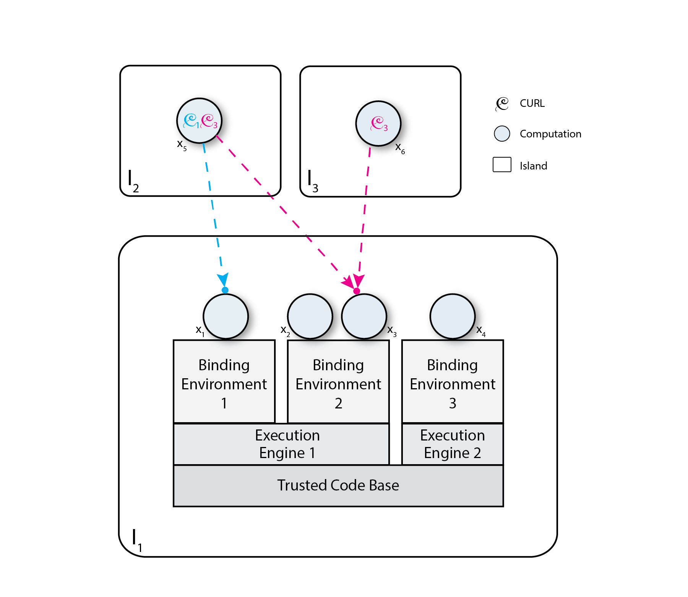

The World Wide Web evolved from humble beginnings to become a cornerstone of almost all facets of modern society, embracing activities as diverse as finance, communications, entertainment, and commerce. Our research lab has made fundamental contributions to the design and evolution of the Web, including Roy fielding’s definitions of the Representational State Transfer (REST) architectural style and the HTTP/1.1 protocol, Professor Jim Whitehead’s WebDAV distributed authoring mechanisms, Rohit Khare’s ARRESTED family of REST-derived styles, as well as Fielding’s work on the Apache Web Server and Justin Erenkrantz’s work on the Subversion configuration management system.
As Web technologies evolved, however, innovations like Ajax, mashups, and Web Services pushed web applications beyond the REST constraints, which provided theoretical and practical guidance to system developers. Justin Erenkrantz, Girish Suryanarayana, and Ph.D. student Michael Gorlick (R. Taylor, advisor) responded to this disparity by articulating a set of theoretical principles called Computational REST (CREST), which explained and extended the emerging importance of computational activity and transfer—as opposed to content exchange—between clients and services.
Through initial exploratory prototyping, it became clear that CREST was not merely an explanatory mechanism for newer Web applications, but a distinct architectural style suitable for novel resilient, adaptive and decentralized systems. In the summer of 2008, Erenkrantz and Gorlick, along with ISR Ph.D. students Yongjie Zheng and Alegria Baquero (R. Taylor, advisor to both), built a dynamic, adaptive feed reader, in which lightweight data processing widgets can be graphically reconfigured on-the-fly to perform collaborative data extraction and display on news feeds. Justin Erenkrantz graduated with the dissertation "Computational REST: A New Model for Decentralized, Internet-Scale Applications" in September, 2009.
Our previous work on CREST evolved into COmputAtional State Transfer (COAST), which provides more detailed principles founded on computational exchange to support the design of openly secure decentralized applications. Since then, Michael Gorlick has been at work exploring the implications of the COAST principles and building a new generation of infrastructure to support more sophisticated forms of computational exchange. Former Ph.D. student Kyle Strasser built COASTcast, an application for sharing and manipulating real-time decentralized HD video streams. COASTcast demonstrates that COAST can be used to distribute real-time data throughout a service topology that may be dynamically reconfigured via computation exchange. COASTcast implements high-definition video streams, from camera to display, as collaborating video services. A single stream may cross multiple organizations: the source (real-time HD video cameras), midpoints (encoders, decoders, and publication/subscription relays), and sinks (user interfaces and displays) may reside and be moved across many distinct islands, each potentially managed by a separate organization.
Our research effort continues on envisioning and developing exploratory applications that allow the investigation of common design patterns, methods for system design, notations to describe COAST systems, and the need for further infrastructure features and tool support. Current exploratory projects include collaborative video-tagging and real-time video editing, a platform for recasting service-oriented architectures and Web Services in e-commerce, situational awareness services, and securely open healthcare systems.
COmputAtional State Transfer (COAST) is an architectural style for secure, decentralized, and adaptive systems. An architectural style involves a set of design decisions which constrain the design of software systems within particular development and deployment contexts. If these constrains are followed, the resulting system will elicit beneficial properties which those constrains are set forth to promote.
The principal goal of COAST is the construction of Internet-scale decentralized applications, where adaptivity, flexibility, agility, and safety are prized attributes. Safety in this domain includes: communication and information security; the protection of host computing resources; and the defense of valued organizational assets such as databases, sensors, and algorithms. COAST targets decentralized contexts where organizations have assets that they provide to others, such as information in databases, devices, or from specialized classes of users. In COAST, third-party organizations create their own custom-tailored versions of services from these base assets in order to obtain the kind and level of service both desired by them and permitted by the asset owner.
Based on the architectural idiom of computation exchange, COAST presents a novel mode of interaction among Internet-scale service providers and consumers that enables tailored service construction and adaptivity. Computation exchange (the computational analogue of content exchange) is the bilateral exchange of computations among peers in a decentralized system containing multiple distinct spans of authority. In this regime, content delivery is a by-product of the evaluation of computations exchanged among peers. COAST is one architectural style for computation exchange, just as "pipes and filters" is one of many architectural styles for data processing.
Any architectural style based upon computation exchange requires mechanisms to address the security risks inherent in exchanging and executing mobile code across multiple, distinct, spheres of authority where malicious mobile code is a near certainty. Also, an architectural style for decentralized applications employing computation exchange should explicitly model the ability of each organization to confer separate organization-specific authority and rights to the same mobile code, reflecting the fundamental freedoms of agency in decentralized systems.
COAST fulfills these requirements through its core architectural principles, which provide practical guidance on designing and developing COAST applications.
Like all other architectural styles, COAST permits multiple implementations (in the form of style-specific infrastructure, frameworks, languages, or ad-hoc approaches) but each of those implementations could have distinctly different impacts on the descriptive architectures of the applications that use the implementation. Implementations should be compatible with the intended context of the style, supportive of the constraints of the style, and facilitative of the benefits of the style.
For this purpose, we have created an implementation platform to facilitate the construction of COAST applications. This platform consists of Motile, a mobile code language whose semantics and implementation enforce key constraints on the use and migration of capability, and Island, a peering infrastructure for Motile computations.
The COAST infrastructure allows developers to design and build applcations that adhere to the principles of the COAST architectural style.
Motile is a single-assignment, functional, and mobile code language based on Scheme for defining COAST architectural elements, namely computations and the messages and CURLs that they exchange. Motile's semantics and implementation express and enforce the communication and execution constraints of COAST, namely the use and migration of capability.
The language contains primitives and standard library functions that allow Motile programs, when used in the context of the Island infrastructure and runtime environment, to reify and manipulate the COAST architectural elements of CURLs and binding environments.
Each COAST computation is implemented as an islet. Each islet is an independent thread of computation that may transmit asynchronous messages to other islets, receive asynchronous messages from other islets, conduct private computation, and spawn new islets. Spawning here is implemented as a specialized kind of message sending.
All Motile islets are named by one or more CURLs. All Motile data structures are purely functional (hence immutable), which circunvents all the shortcomings of synchonization characteristic of shared-memory communication.
When a Motile closure is sent between two computations on distinct islands, the closure is routed through the Motile "decompiler" and is serialized. When received by the island on which the destination computation is executing, the message is subsequently deserialized and "recompiled" into closures of the host language.
An island is a single, homogeneous address space occupied by one or more Motile islets. Islands implement the role of "execution host". Each island is uniquely identified by the public key half of a public/private key pair. All islands are self-certifying and all communication between islands is encrypted.
Island incorporates a number of libraries for managing message transmission and Motile computation management, including the CURL library, the persistent functional data structures used by Motile programs, and the ability to start Motile programs with selected binding environments.
Each island is instantiated with an initial set of execution engines, binding environments, and a set of trusted computations that allocate execution sites to visiting computations. Those trusted islets have access to implementation-level Motile primitives that other computations are not permitted to call, for example, creating an islet, instantiating island-wide user interfaces, and staging fixed island assets. These primitives include all functions not written in Motile but made available through the binding environments allocated to Motile programs. These programs are evaluated in the context of a binding environment allocated by the island on which they run. This decision maintains a sharp distinction between the fixed assets (primitives) provided by organizations engaging in a COAST ecosystem and the Motile code written to use those assets.
Trusted islets also issue CURLs naming themselves, with the distinction that their CURLs are durable, therefore valid even after an island is restarted. Computations holding a CURL for a trusted islet t are permitted to send a closure to t to spawn a new COAST computation.
Island is not implemented in Motile, but instead it is implemented in whichever host language the organization wishes to use. In our case, Island (and the Motile compiler) are implemented in the Racket language (http://racket-lang.org).
